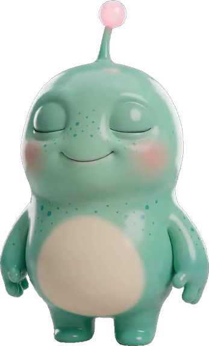

Tenez le téléphone au-dessus de la carte, bien à plat.
Tenez le téléphone au-dessus de la carte, bien à plat.
La carte suivante est cachée…

Une chasse au trésor magique · 3 à 12 ans
Cette nuit, le vaisseau de Pixo s’est écrasé chez vous. Ses six morceaux sont cachés dans la maison. Les enfants vont les retrouver avec le téléphone… et Pixo va apparaître dans votre salon.
Pour les parents · environ 20 minutes · la caméra reste sur le téléphone, rien n’est enregistré
Mission accomplie
ont retrouvé les six morceaux du vaisseau de Pixo et l’ont aidé à rentrer chez lui. Ce soir, regardez le ciel…